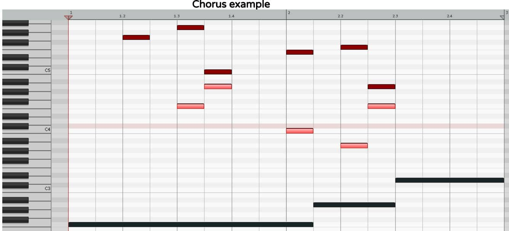

Counterpoint: Creating Depth by Adding Musical Layers
WTF is Counterpoint?
Let’s just say it’s one of the best ways to make your music stand out from the crowd, as there’s probably less than 0.01% of all popular music that has any counterpoint in it.
Counterpoint is the method of adding musical layers by composing melodies with countering contours.
A song could have ten different synths in it, but if they’re all playing the same thing, it’ll sound thin with only one musical layer.
On the other hand, a song could have a mere two synths, but if they’re playing totally different melodies at the same time, that creates two musical layers and therefore true musical depth.
Yes, two synths using counterpoint will sound bigger than ten synths not using counterpoint.
This is because counterpoint stimulates the brain to listen both melodically (horizontally) and harmonically (vertically).
The hacks below exist to ensure your multitracks are actually perceived as musical layers.
THREE COUNTERPOINT HACKS
- If the lead melody moves up, the backing melody moves down (contrary motion) - the holy grail!
- If the lead melody moves up, the backing melody stays the same.
- If both melodies move in the same direction, one moves by a small interval, the other by a big interval.
Using the above methods will always ensure your melodies are heard as independent layers, and not just copies of each other.
These compositional techniques can be used for all your layers, from backing vocals to bass, from synths to guitars.
Anything and everything benefits from counterpoint composition.
Chorus Example

| Root Notes of Chord Progression (dark long notes in MIDI) | Lead Vocal Melody, with Spelling spelling is heard & written in relation to each chord's root note | Vocal Counterpoint (highlighted in MIDI), with Spelling spelling is heard & written in relation to each chord's root note |
|---|---|---|
| F for Fmaj | G (2) → A (3) → C (5) → E (7) | _* → F (1) harmonizes A (3) → A (3) harmonizes C (5) → C (5) harmonizes E (7) |
| A for Am | F (♭6) → A (1) | A (1) harmonizes F (♭6) → F (♭6) harmonizes A (1) |
| D for Dm | - | - |
* The first note of the lead vocal melody (G) is not harmonized, as I wanted to create a "springboard" note from which we can jump into the counterpoint, which also starts on a strong rhythmic beat for extra impact.
BONUS HACK: It’s not always possible, but try to harmonize in 3rds (e.g. A & C), as this is the magic interval we use to build chords.